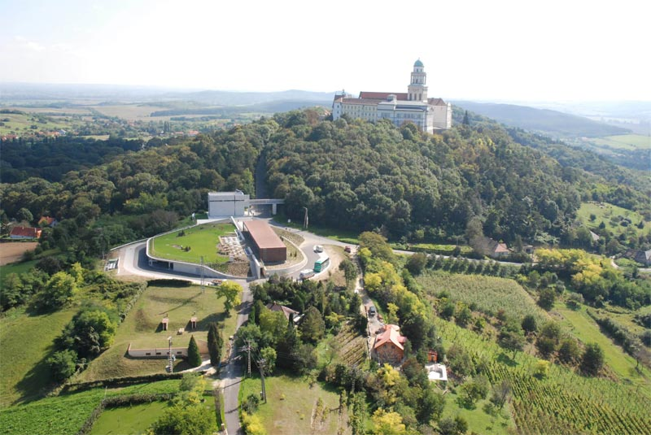
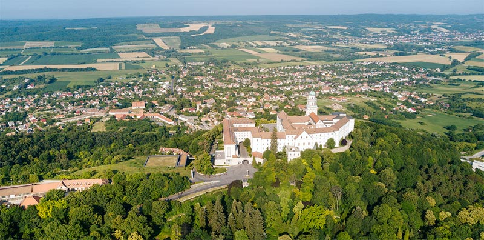
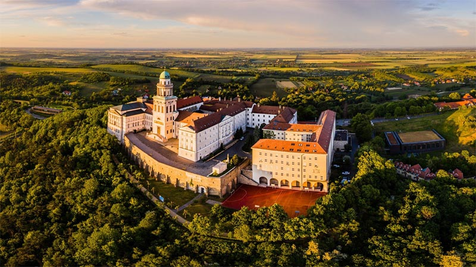
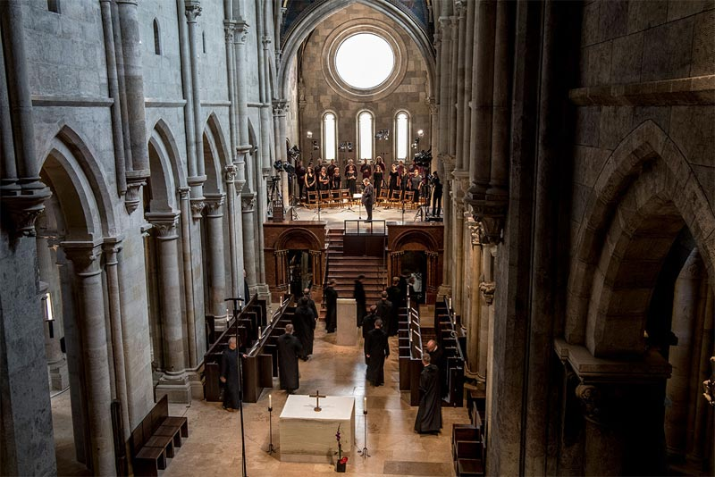
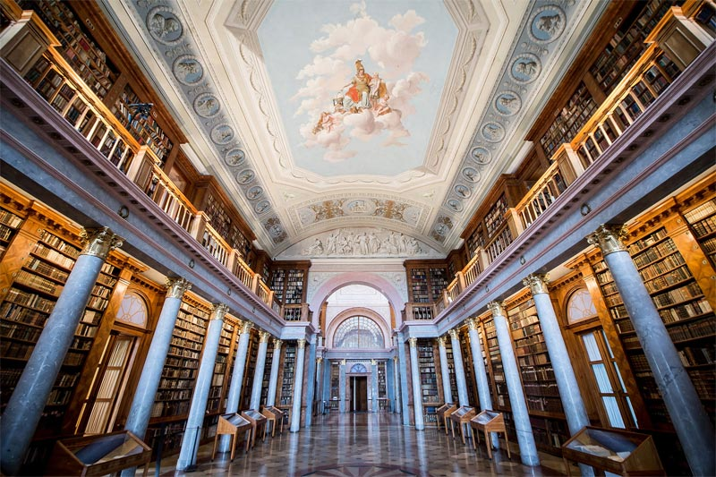
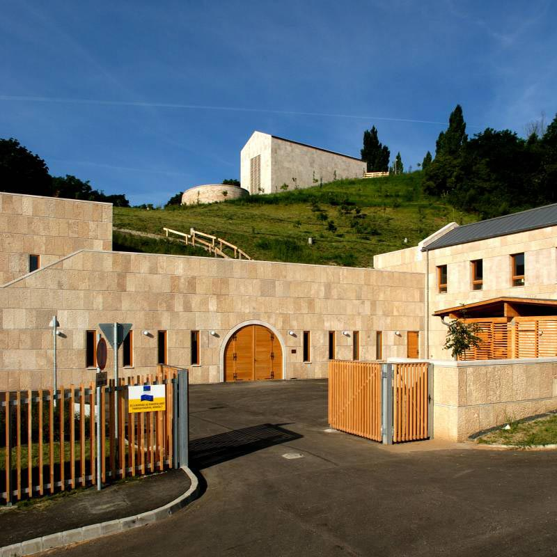

【美景】
潘诺恩哈尔姆修道院是匈牙利历史上最珍贵的建筑之一，是教堂和艺术史的中心，也是世界遗产的一部分。 该地游客的数量每年超过20万。潘诺恩哈尔姆景观保护区成立于1992年，占地7042公顷。 修道院图书馆已有1500年历史，保存了希腊罗马文化的作品以及欧洲的文化。 潘诺恩哈尔姆修道院酿酒厂已有一千多年的历史。
【美食】
Goulash牛肉炖汤
Libamáj 鹅肝
Lángos特色油饼
Toltott Kaposzta 圆白菜肉丸
Halászlé 鱼汤
Ujhazi Tyukhuslevesi 家常老鸡汤
Kurtoskalacs 烟囱卷面包
Egri Bikavér埃格尔公牛血葡萄酒
潘诺恩哈尔姆 潘诺恩哈尔姆是位于匈牙利西北部的城镇，距离杰尔20公里，面积30平方公里，人口3860，其中约八成居民信奉天主教。这是一个热门的旅游目的地，以潘诺恩哈尔姆的本尼迪克特建筑大修道院及其建筑而闻名。 该地的形成始于996年本笃会的出现，那时建造了修道院。17世纪初，土耳其人摧毁了该定居点，后在1689年得以重建。潘诺恩哈尔姆的本笃会大公修道院是匈牙利历史上最珍贵的建筑之一，是教堂和艺术史的中心，也是世界文化遗产的一部分。该地游客的数量每年超过20万。潘诺恩哈尔姆景观保护区成立于1992年，占地7042公顷。

景点：潘诺恩哈尔姆修道院 潘诺恩哈尔姆修道院是为了纪念图尔的圣马丁教堂而建造，996年，热萨王子将来自捷克共和国的僧侣定居在潘诺尼亚的圣山上。匈牙利第一位国王圣史蒂芬（1000-1038）也经常在城墙内健身。 
如今这里仍然记载着建造者乌罗斯神父（1207-1243）从修道院堡垒的墙下击退了蒙古人。1802年，弗朗西斯一世命令恢复了五个修道院，并将中学教育作为社区工作的主要领域。政权更迭后，潘农哈尔玛的本笃会社区除了继续其学业外，还试图在新的工作领域创造经济机会，使其能够在教会和世界上发挥作用。

景点：大教堂 如今在潘诺恩哈尔姆可见的圣马丁大教堂的大部分建筑都可以追溯到13世纪。它建于19世纪初的哥特式风格，除匈牙利大师的作品外，该建筑还受到了莱茵河上游和法国北部的影响。在土耳其时代，内部设备被完全摧毁。最近的一次建造于2012年，由英国建筑师设计。

景点：修道院图书馆 修道院图书馆，古典主义风格，是建筑群最重要的部分之一，尽管建筑物本身一部分仅建于19世纪，但它已经有1500年的历史了，为我们保存了希腊罗马文化的作品以及欧洲的文化。图书馆建筑的纵向部分是在1820年设计和建造的，维也纳大师被要求装饰建筑物的内部，椭圆形大厅天花板的四个侧面是四个中世纪大学学院的象征。如今，该收藏集中保存了约40万册图书。

景点：树木园和药草园 树木园和药草园是古代的僧侣精心种植并收集了治病所需的植物的地方。到1830年，修道院的植物园中已经有大约80种树木和灌木。如今，树木园地区有数百种树木和灌木物种，其中一些是特殊的物种和变种，仅出现在该国的少数地方。
景点：潘诺恩哈尔姆修道院酿酒厂 潘诺恩哈尔姆道院酿酒厂在各个方面都是模范企业，葡萄栽培技术、酒窖技术和建筑学的卓越成就将建立在圣马丁山上的葡萄栽培和葡萄栽培文化与满足当今需求相结合，。修道院的葡萄栽培和葡萄酒酿造传统的重新创建，始于在一些旧修道院庄园被购回后的葡萄栽培技术，然后继续建造新的酒窖和葡萄酒屋。潘诺恩哈尔姆具有非常重要的历史葡萄栽培和酿酒工艺背景，为此决定将意大利雷司令原产地迁移到该地区。
